Fixed in all ten: the file system (v2 design 11, outline tree), the left navigation (v2 design 12) and Settings (v2 design 15). Everything else differs per design. Each design opens with two copies side by side: full of data (left) and empty, first run (right).
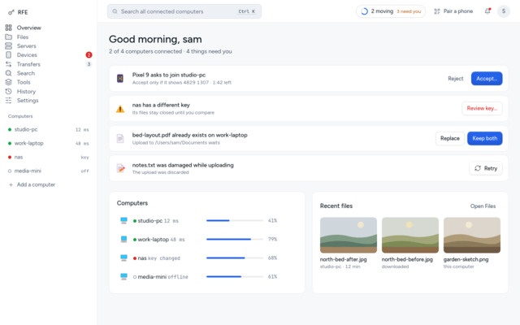
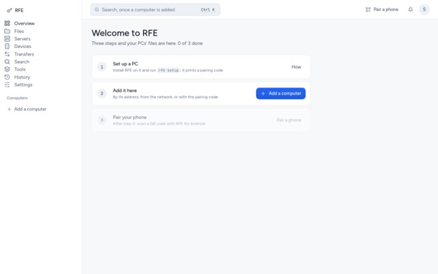
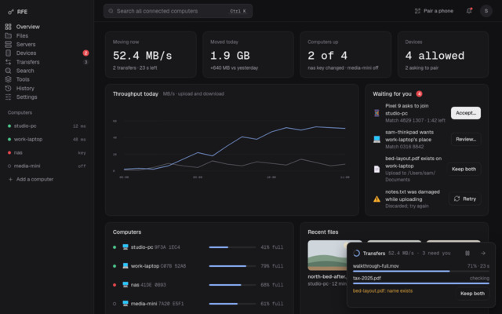
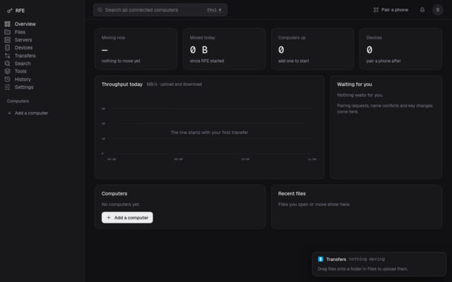
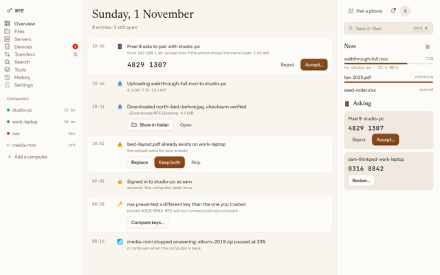
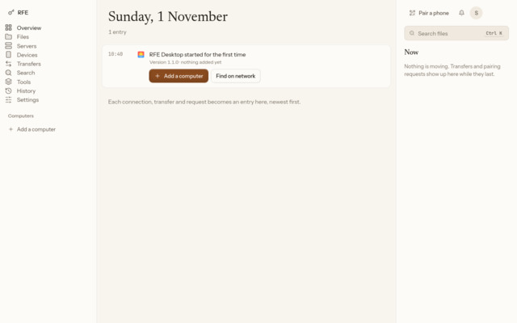
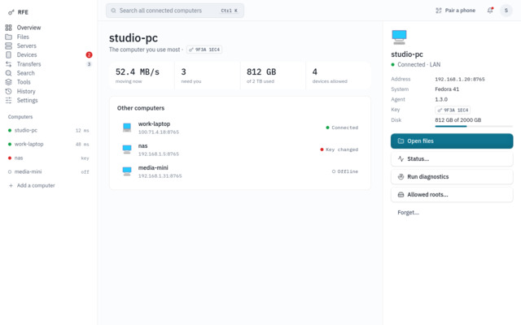
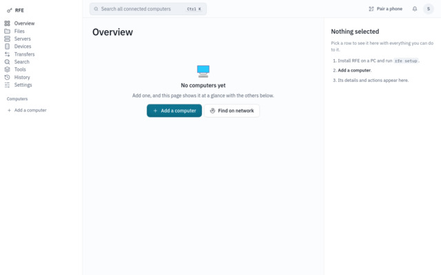
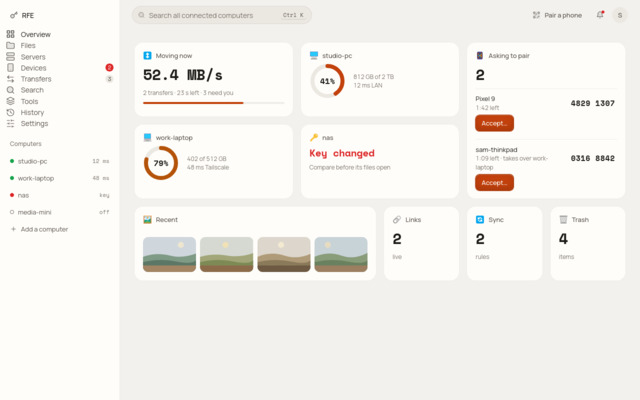
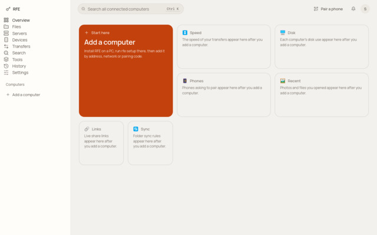
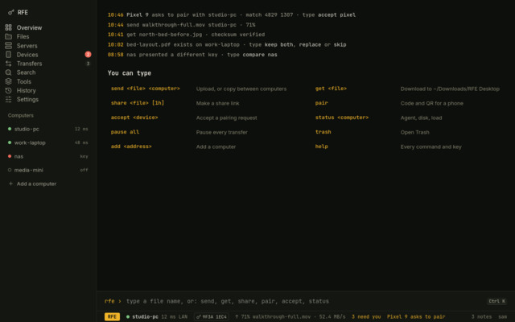
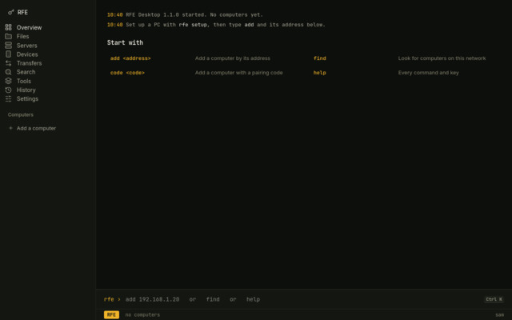
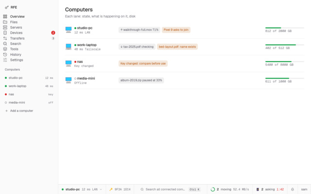
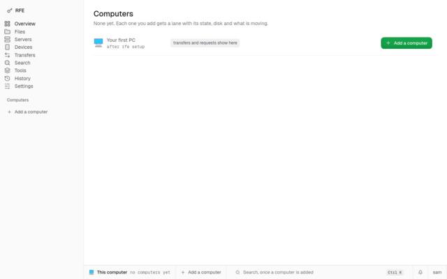
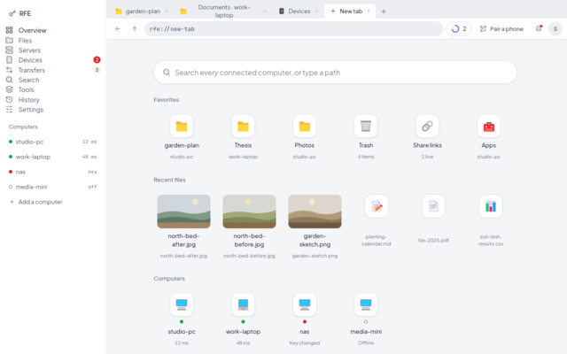
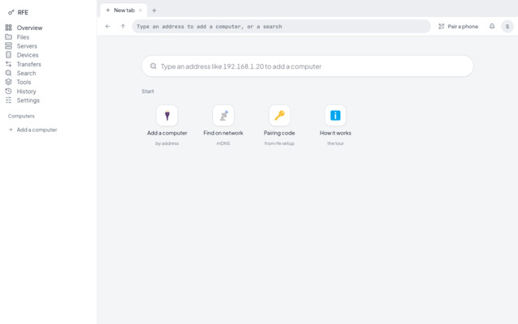
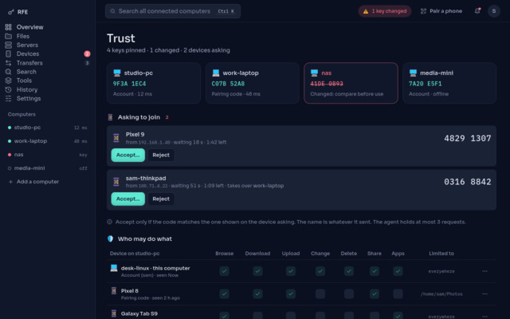
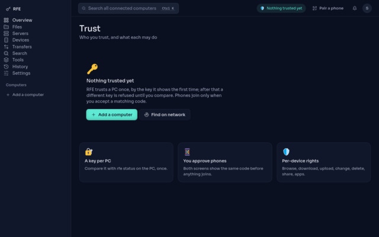
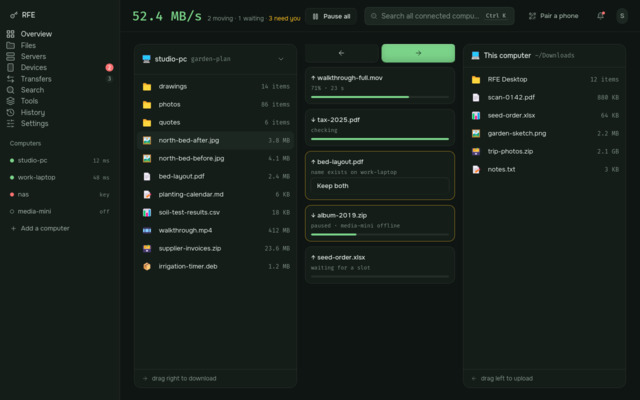
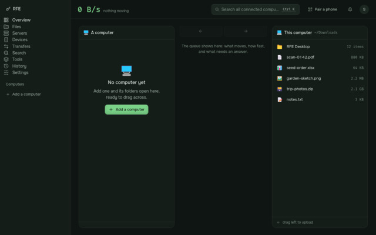